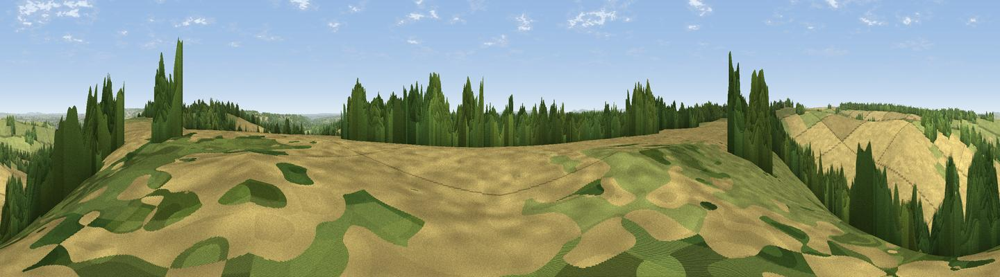

Viewpoint near Aldworth
#37995 in England · top 50% of its area beats it · near Aldworth · path 259 mWhere it is
The exact computed spot (SU 57275 79975). Click the marker for map links.
Public access: the nearest public right of way is about 259 m away — the final stretch may cross private land. Computed from Natural England's CRoW access layer and OpenStreetMap rights of way — not the legal definitive map. Always verify locally.
The view, rendered

A 360° render of this exact spot computed from the terrain model, tree cover and land cover — summer colours, afternoon light, calibrated against photographs of famous viewpoints. Real trees, hedges and buildings will differ in detail.
The panorama
Grey silhouette: terrain skyline in each direction (720 bearings, Earth curvature and refraction included). Dashed green: skyline with trees (+15 m) and buildings (+8 m) as obstacles. Blue strip: how far the ground is visible on each bearing.
Where the view opens
Wedge length = distance to the farthest visible ground on that bearing (vegetation-aware). Rings at 10, 25 and 50 km.
What fills the view
61% cropland · 21% grassland · 17% woodland
Angular shares of the visible panorama (visual magnitude), not map area. Landscape diversity 0.41 (0–1 Shannon).
Key numbers
More beautiful places nearby
The staircase of upgrades: each row has a higher view potential than everything closer. Driving times are estimates from straight-line distance, calibrated against real road routing — check an actual route before setting out.
| Place | Direction | Drive | Score |
|---|---|---|---|
| Viewpoint near Streatley | NE · 2 km | ~5 min | 57.2 |
| Viewpoint near Moulsford | NNE · 3 km | ~7 min | 58.8 |
| Viewpoint near Compton | NW · 4 km | ~9 min | 64.1 |
| Castle Hill | N · 13 km | ~23 min | 68.3 |
| Round Hill | N · 13 km | ~24 min | 70.1 |
| Viewpoint near Watlington | NE · 19 km | ~32 min | 70.6 |
| Viewpoint near Lewknor | NE · 21 km | ~35 min | 70.8 |
| Viewpoint near Lewknor | NE · 23 km | ~38 min | 74.4 |
51.51580, -1.17599 · source: screening · position refined by local search. Computed location — check access rights before visiting.